-
ПРо нашу клініку
Історія центру
Vet House — прогресивний ветеринарний центр, де працюють висококваліфіковані спеціалісти.
Лікувальна робота лікарів базується на принципах доказової медицини. Тобто, лікування тварин проводиться згідно схем та протоколів, що опираються на результати клінічних досліджень та багаторічний досвід європейських колег. Разом з тим, лікар виконує індивідуальний підхід, аналізуючи та враховуючи особливості кожного пацієнта.
У центрі функціонує сучасна ветеринарна лабораторія, де виконується переважна більшість досліджень: загальні клінічні та біохімічні дослідження крові, цитологічні та мікроскопічні дослідження, ІФА та ІХА діагностика на вірусні хвороби, аналізи сечі тощо. Також нещодавно з'явилась нова послуга - коагулограма, для більш точної постановки діагнозу.
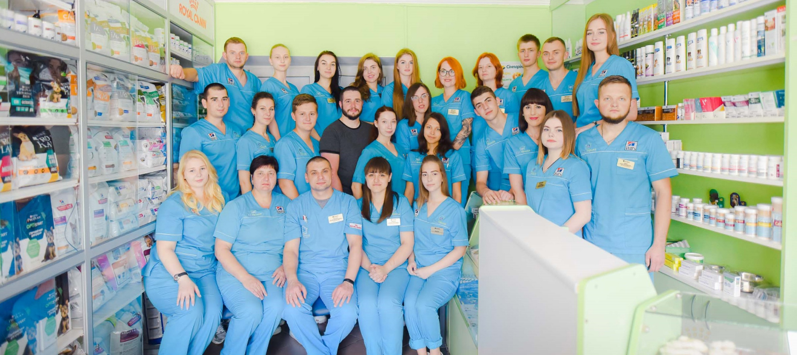Окрім лабораторної діагностики, не менш важливою та об’єктивною є візуальна. В центрі проводиться УЗД органів черевної порожнини та серця (є можливість проведення із доплерографією), та рентгенологічне дослідження. Це все оснащення дає змогу лікарю виконати саме той вид досліджень, що необхідний в конкретному випадку, та в максимально швидкі терміни отримати результат.
Ми перші в Україні розмежували центр на відділення для котів і собак. Відтак, є окремі зони очікування, дві окремі спеціалізовані ветаптеки, окремі приймальні, що мінімізує контакт між тваринами. Відділення інтенсивної терапії теж розділяється на окремі кімнати для котів і собак.
-
справжні спеціалісти
Принципи
У центрі функціонує сучасна ветеринарна лабораторія, де виконується переважна більшість досліджень: загальні клінічні та біохімічні дослідження крові, цитологічні та мікроскопічні дослідження, ІФА та ІХА діагностика на вірусні хвороби, аналізи сечі тощо. Також нещодавно з'явилась нова послуга - коагулограма, для більш точної постановки діагнозу.
Окрім лабораторної діагностики, не менш важливою та об’єктивною є візуальна. В центрі проводиться УЗД органів черевної порожнини та серця (є можливість проведення із доплерографією), та рентгенологічне дослідження. Це все оснащення дає змогу лікарю виконати саме той вид досліджень, що необхідний в конкретному випадку, та в максимально швидкі терміни отримати результат.Ми перші в Україні розмежували центр на відділення для котів і собак. Відтак, є окремі зони очікування, дві окремі спеціалізовані ветаптеки, окремі приймальні, що мінімізує контакт між тваринами. Відділення інтенсивної терапії теж розділяється на окремі кімнати для котів і собак.
-
справжні спеціалісти
Наша команда
-
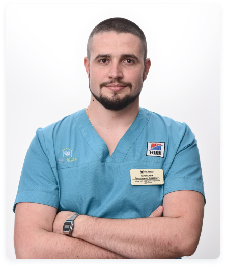
Володимир Біленький
Директор
-
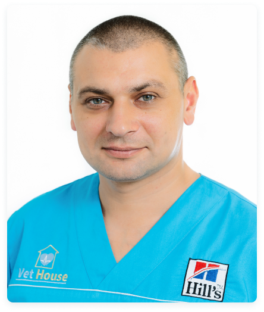
Віталій Каптенар
Головний лікар
-
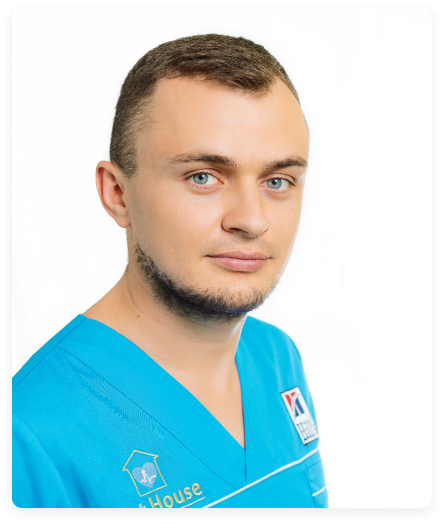
Василь Полюхович
Заступник директора
-
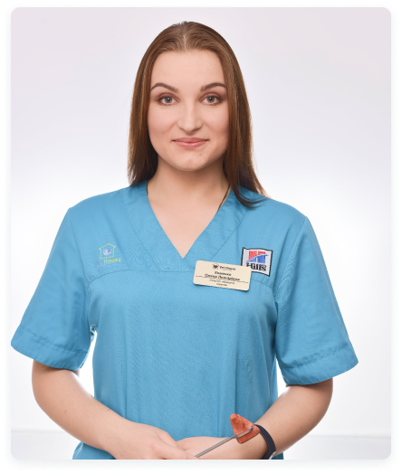
Олена Коломієць
Ветеринарний лікар
-
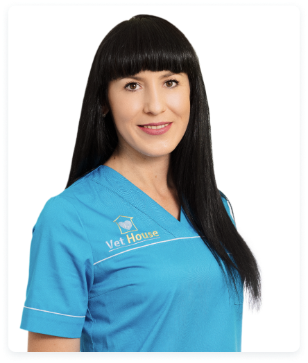
Тетяна Заморська
Ветеринарний лікар
-
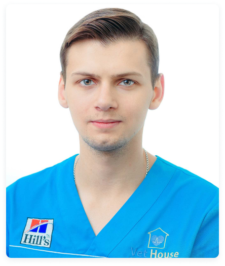
Володимир Рябий
Ветеринарний лікар, ортопед
-
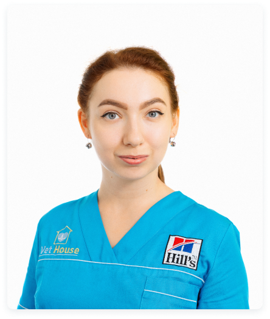
Анастасія Петрушко
Ветеринарний лікар, кардіолог
-
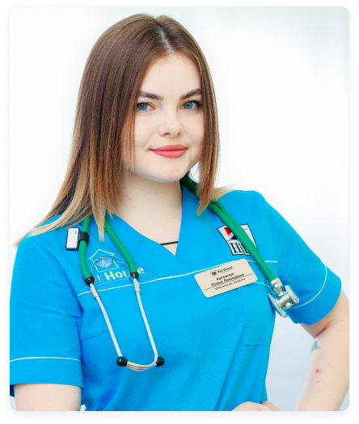
Олександр Хмельовський
Ветеринарний лікар
-
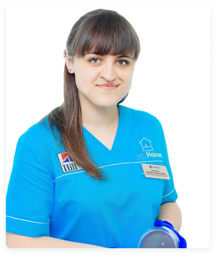
Марина Полюхович
Адміністратор
-
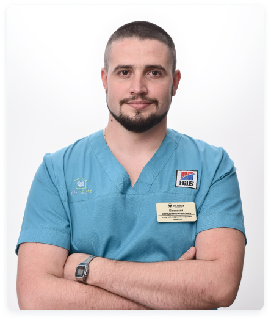
-
мОМЕНТИ НАШОГО ЖИТТЯ
Фотогалерея
-

-
 м. Вінниця, пр. Юності, 44
м. Вінниця, пр. Юності, 44
-

Працюємо цілодобово та без вихідних
-
 Особистий кабінет
Особистий кабінет